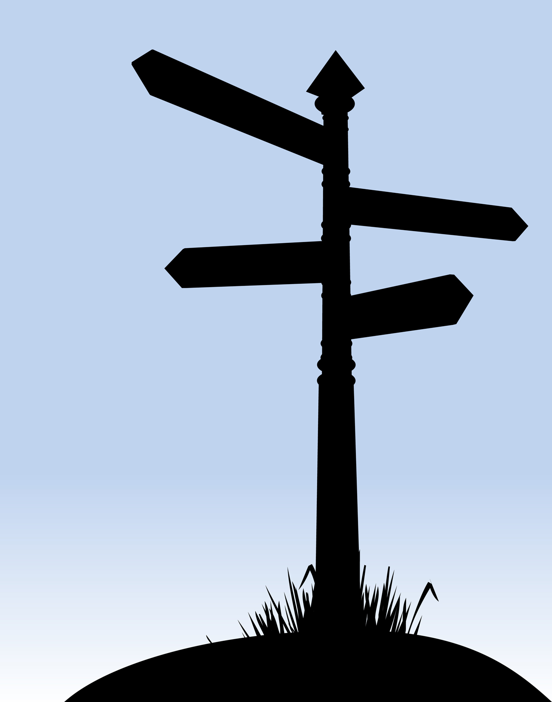

::¿Qué es Angular JS?::
{{ x.desc }}
::Características::

{{com1}}
El enlace de datos en las aplicaciones Angular se realiza mediante la sincronización entre los componentes del modelo y la vista.
La vista es una proyección del modelo en todo momento. Cuando cambia el modelo, la vista refleja el cambio, y viceversa.

Las directivas son nuevos atrubutos que pueden ser agragados
al documento HTML.
Las directivas en angularJS llevan el prefijo "ng-"
Ejemplos:
ng-app: Inicializa la aplicación Angular.
ng-init: Inicializa la aplicaión de datos.
ng-model:Enlaza los valores de los controles HTML
a la aplicación de datos.
{{com2}}
Las directivas son nuevos atrubutos que pueden ser agragados
al documento HTML.
Las directivas en angularJS llevan el prefijo "ng-"
Ejemplos:
ng-app: Inicializa la aplicación Angular.
ng-init: Inicializa la aplicaión de datos.
ng-model:Enlaza los valores de los controles HTML
a la aplicación de datos.
{{com3}}
Los filtros en Angular nos permiten darle formato a los datos.
AngularJS provee de diversos filtros para darle el formato a los datos que sea necesario.
Ejemplos:
lowercase
orderBy
uppercase
date